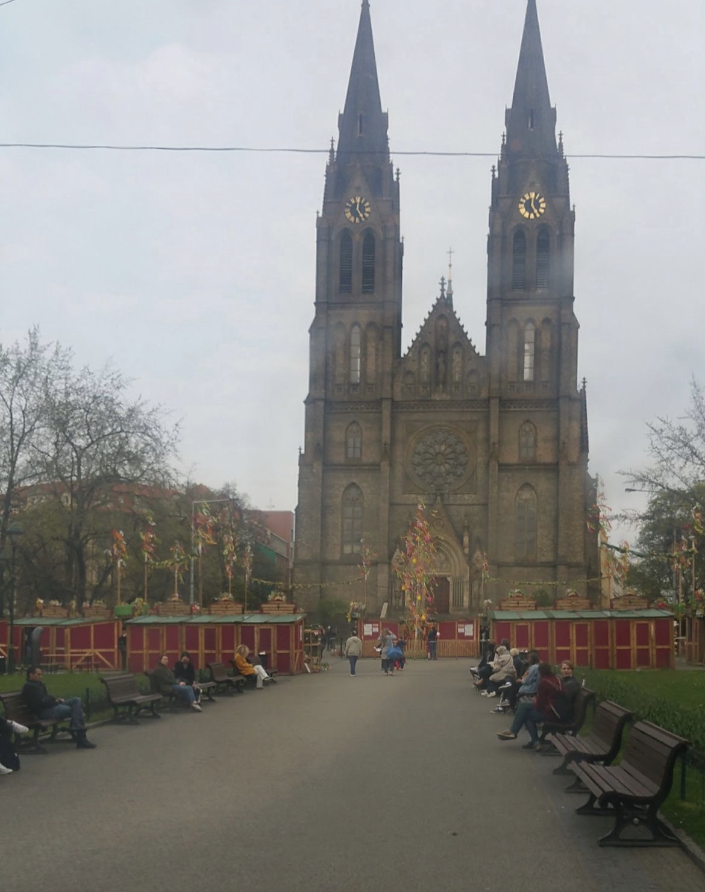

Prague, the city of a hundred spires, enchants with its fairy-tale charm. Cobblestone streets weave through a blend of medieval architecture,
where ancient castles and colorful houses whisper tales of history. A symphony of culture, art, and lively energy awaits in this magical Czech capital!
Since i went to Prague during Easter time, there were souvenir stands and colorful decorations in the square and its surroundings, perhaps even on every street.
This photo is a photo i took in the square in Prague. Even though the weather was bad, people were setting up their stands, singing and dancing.